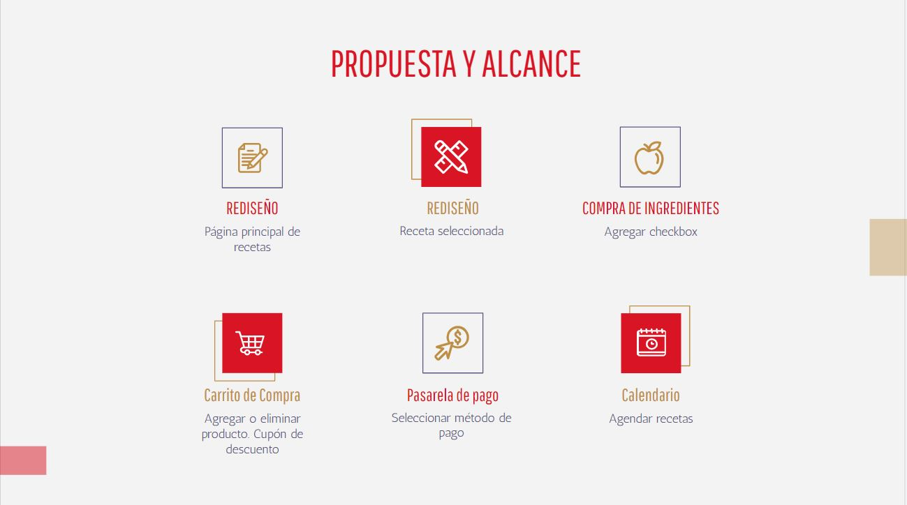

Investigación
Entrevista
La investigación inicio a través de una entrevista con el cliente, en este primer
encuentro se conocio los requerimientos y expectativas por parte de SMU para el
rediseño de la sección "Recetas". Para SMU lo fundamental es que los usuarios puedan
comprar los ingredientes de las recetas de forma amigable ya sea via online o
presencial.
Benchmark
Se análizaron distintas plataformas con características similares, partiendo desde
el diseño hasta la funcionalidad.
Benchmark completo en el siguiente
link
Análisis Heurístico
Con un resultado de 45,89% de usabilidad se realizo un Análisis Heurístico de la
sección recetas de Unimarc. En esta métrica se analizaron diez aspectos
diferentes, teniendo cada bloque una valoración del 0 al 10 (donde 0 = Muy
Mal, 10 = Muy Bien; NA = No aplica para el sitio, S = Se cumple en todo el
sitio).
Para detallar el Análisis Heurístico, entrar el siguiente
link
Accesibilidad
Se realizo un test de accesibilidad para conocer si las herramientas y las
tecnologías utilizadas en el sitio web estaban diseñados y desarrollados para que
las personas con discapacidad puedan
usarlas.
Hubo 4 errores detectados los cuales se basaban fundamentalmente en la falta de
lectura de ciertas imágenes, adicional existen 111 potenciales errores que van desde
el contraste, pasando porl el tamaño de las las letras y finalizando con
inconvenientes en la lectura de fotos e imagenes
Ver test de accesibilidad
aquí
Definición
Perfil del Cliente
Luego de las investigaciones previas se definio un perfil de usuario al cuál iba
dirigida la plataforma. Se determinaron sus motivaciones y frustraciones en relación
a la experiencia de compra y basado en esto se busca crear una propuesta que cumpla
sus expectativas y minimice las frustraciones.
Propuesta y Alcance
En un segundo encuentro con el cliente se le presento la propuesta a desarrollar, en
dicha propuesta se describieron las características y aportes que estaran presente
en el
diseño final
El alcance la propuesta contempla:
- Rediseño página principal de recetas
- Rediseño página detalle de recetas
- Compra de ingredientes
- Carro de compras

Testeos
Para poder definir ciertos aspectos del diseño se procedio a realizar un A/B Testing,
donde se le presento a los usurios distintas opciones donde debian eligir una, los
resultados obtenidos fueron aplicados en la propuesta para SMU
Para ver el test aplicado ver
aquí
Diseño
Wireframe
Luego del proceso de investigación y testeos se procedio a realizar un wireframe, una
guía visual que representara la estructura visual del sitio web. En el diseño de mediana
fidelidad se aplicaron características como: Filtros, buscador, registro de usuario y
una imágen hero que busca resaltar la importancia de la sección.
Para acceder a este prototipo de media definición, haz click aquí
Prototipo Alta Fidelidad
En el prototipo de Alta fidelidad se mantuvieron elementos indispensables de Unimarc como
el header y footer, adicional se resalto la imágen de Nacho Román quien es la figura
principal de "Recetas Unimarc". En la propuesta final se busco destacar la forma en la
que se presenta las recetas con imágenes claras, una pequeña descripción e iconografía.
Se rediseño totalmente la sección de recetas, ahora los usuarios tendrán la opción de ver
los tiempos de preparación, dificultad y porciones del plato a cocinar, también se podrá
agregar a favoritos, calendarizar, agregar a lista de supermercado, imprimir y descargar
la receta. Las personas contaran la opción de agregar los ingredientes a un carrito de
compra de manera inmediata y comprarlos de forma online o agendar una hora para ir a una
sucursal cercana y comprar de forma presencial.
Una vez agregados los ingredientes al carro de compra se detallara las cantidades, el
precio y se podrá agregar o eliminar un artículo, de igual forma existiran sugerencias
de productos que pueden sumar a la compra y la posibilidad de descuentos con la tarjeta
Unimarc.
Ver el prototipo final versión desktop en este enlace y la versión mobile
aquí.